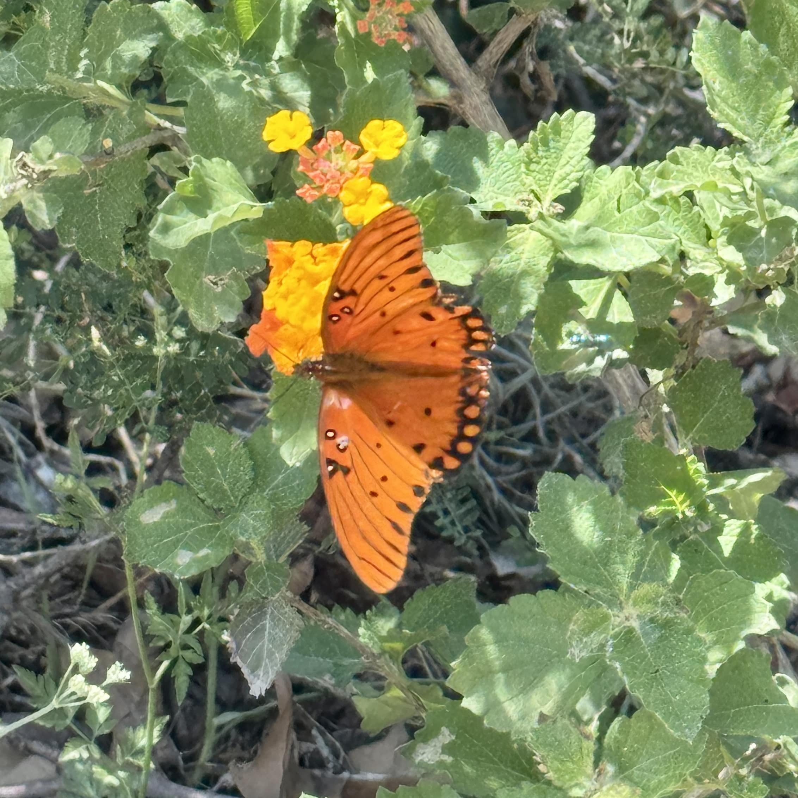

Microblog
2025-06-16 The day before yesterday I attended a protest in the US. I was there until the very end. I saw people being tear gassed, and cops macing people despite, from what I could see and my perspective, zero violence came from protesters. In fact, at the slightest hint that violence could happen, such as parts of the crowd beginning to surround street traffic barricades or at one point a car that tried to drive through us, large portions of the crowd instantly responded by screaming at them to not be violent and ripping them away from what they were surrounding. With that I began to have a really overwhelming feeling that the police were not present to help people or maintain order but were there to hurt people or at the very least heavily encourage anything that would give them a reason to respond with force. I realized when people were tear gassed that no medics were there to help them that weren't just other protestors in the crowd. I'm not sure what innocent people who, in the confusion of what was happening were tear gassed, were supposed to do when they started coughing uncontrollably and couldn't open their eyes. I even saw people coughing so violently that they collapsed on the ground. This happening gave other protesters the opportunity to work together to help people, and ironically, that gave me so much hope. I think I'm going to write a full blog post or testimonial (ish) retelling exactly what I saw and experienced. Maybe it will be helpful or illuminating in someway.
2025-06-13 The other day I had a really really bad health scare and had to go to the emergency room. It was really really scary
and not fun. I would not recommend lol My health is not super great right now :( but I am doing better week by week I think and trying to be gently to myself. Something
like that probably won't happen again (thank goodness). It was my first time in the ER and everyone was extremely nice to me, and weird side note
I was in really bad shape when I got there so I had to fill out ZERO paperwork which was a huge blessing lol
Outside of very scary health issues, I got some new stationary which is exciting. I got some stickers, some washi tape, and a tiny little expandable pair of scissors by kokuyo! I'm kind of addicted to this stuff I think :P
2025-06-08 I just realized it has been nearly a month since I last updated or was super active on neocities at all (;*_*) I'm sorry >.< I mean I just like the community on this site a lot :p A lot of stuff has been going on for me personally. I have been working a lot on the website I was hired for with dubious progress. My sleep schedule has been all over the place which I think kind of makes it harder to do stuff or do stuff in a focused way. Oh and I started seeing a dietitian to get help addressing some very maybe no so healthy ish eating habits I have which has been pretty stressful dealing with in general... butttttttt genuinely I love my life and it is seriously relatively chill maybe just stuff I need to work on personally idk. I think I'm going to start doing more work on neocities and being more active now to take a break from the other site. I have missed you guys ^-^ I hope you are all well :)
2025-05-19 The website I'm working on is being a little tougher than I anticipated. I feel pretty unsure about how I lay
things out but honestly once you get the initial layout done and settled its really pretty smooth sailing. If you are at all interested
I thought it might be cool to include some pages from my journal while I was brainstorming for it :3


none of this stuff is final of course and its possible literally none of this makes it into the final product but still. I kind of
want to work on making my handwriting easier to read but I love how flowy my handwriting is. I think it has the potential to be pretty
LMAO this is almost like casual cursive? i don't lift my pen when writing most of the time and I think my handwriting has adapted so i
can do that and it still be slightly readable.
in other news, it seems that Texas has bill in committe currently (here is the plain text of Bill 3817) in the state congress that is trying to make being trans literally illegal.
I wish I were joking or exaggerating but that is actually happening. A bill just went through (i'm not sure if its signed yet) that tries
to redefine gender biologically whatever that means. RIP intersex people
it's unlikely the bill criminalizing being trans (punishable by jail time btw) would actually pass but it can be seen as political posturing or
positioning. The bill that just passed was in a very similar position not too long ago (constantly dying in committee)
Unfortunately this makes staying in Texas, the state I grew up in, went to school in, and where all of my family is, unsafe, and I have to move :(
it really sucks. I wish it weren't like this. I'm unsure if I would have stayed in Texas, but it still sucks to have that choice taken from me. anyways
I'd rather die than not be trans so I'm going to move. Probably to portland or somewhere on the west coast. It's okay. Everything will be fine. probably.
2025-05-14 I didn't realize it's been a week since I last wrote and i totally forgot to push... I got really sort of mentally knocked out a bit but i think i'm recovering. In other news... I GOT A JOB or like a freelance thing! I'm building a website for a community centered art magazine and they said I could do whatever I wanted >:3333 and i'm getting paid :0 absolutely crazy I'm so freaking excited :333333 AHHHHH its going to be so cool and hardcoded and web 1 and I get to help my community in the process it makes me so happy I'm going to finally be working on stuff again :) here and elsewhere
2025-05-06 I am finally done with finals. It was really brutal, and I still really feel the after effects :( but things will only get better. I played a few shows. That was fun, and I made lots of music for them. still, oh my goodness... its okay though. everything is going to be okay
2025-04-28 Life has been kind of hard lately. My partner and I separated a few days ago which really sucked, and I am still
in the middle of finals. I also learned if I don't do well on one of my finals I might fail the class 0_o I'm finding it
pretty hard to do stuff honestly, but I am trying my best. I've been working on music which is fun, but I might be working
on it too much. I don't know. It is a really big privilege that I am alive and get to experience so much stuff even
if it sucks sometimes. I think the joy of existing isn't just the magnitudes of our good moments. It is found in the flow
between our good and bad moments. Both will always come to pass. In another news I have been really enjoying super optimizing
how I could. It's kind of silly, because I'm not sure how much faster this actually makes me. In fact it might even slow me down
lol but I can do so much with just the keyboard. I can write text, surround it with a tag, and then instantly go to the end of the
line to continue typing. All without touching my mouse.
Here is a little video demonstrating these cool shortcuts

2025-04-23 Oh my goodness my test did not go well... but weirdly I think its okay. I did the calculations and this course is so hard that to get credit I only need a 64 in the class (passing is a 45% XD) which means I now only need to make a 40 on the final :D (i think this test just won't count because it will probably be my lowest score and that one doesn't count for anything :P). Outside of that I think I'm going to try to be done finally with obsessing over my home page and start actually making content and writing on this website (^_^) I'm excited for that! I've realized recently that I barely use my laptop at my desk in my room nowadays I am out of my apartment from around 9-10am until maybe 8pm everyday sitting in random cafes and outside :) I'm still extremely online but now its ✨outside✨. I just love it so much. I love looking at trees and walking around listening to music and taking off my headphones so I can hear the birds. It makes me feel like so here if that makes any sense.
2025-04-21 I've been really frustrated with my website. I keep changing things or having some big idea that takes a long time to actually implement, and then when I go through the troulbe of implementing it I realize I don't even like it :( Its very frustrating but it's okay. I added a new background to my home page. I played with the idea of making the background of each box see through so you could see the background better but because i'm using a gradient border around the boxes this is nearly impossible to execute in css (not imopssible but extremely difficult) and the more I thought about it the more I realized maybe i didn't even want that. maybe it would be kind of claustrophobic and weird idk. So i settled on this for now. i really like this tileable background I made or at least my idea behind it let me know If its too much though seriously i can't tell rn lol. Other than that I have been fairly absorbed in making music again which is awesome and really rewarding. I have a show coming up that I'm making some remixes for right now. I also have a chemistry test the day after tomorrow \(˚☐˚”)/ I am so scared and have not studied enough so I'm going to start now omg omg omg omg
2025-04-17 I got stung by a bee today :(((((( OUCH OUCH OUCH OUCH OUCH OUCH OUCH OUCH OUCH OUCH OUCH OUCH OUCH OUCH OUCH OUCH OUCH OUCH OUCH It happened while I was sitting outside on a bench working on something. I didn't even know a bee was around it stung me on my leg and I got jumpscared by it. It hurt really bad and its swollen and stings I feel so bad for the bee. Poor guy :( he was just trying to do his best I'm so sorry you had to die so unnecessarily I hope there is a bee heaven for you. You deserve it. When I was little I was terrified of getting stung by a bee. It was one of the first nightmares I ever remember having. I remember the pain in the dream was so vivid I would wake up and cry. Now that I've finally experienced it I can say it lived up to the hype >w< it hurt really bad (okay maybe it wasn't that bad but still) rest in peace mr bee :(
2025-04-15 I have been working on this website A LOT. I am not sure how productive I have been though. I'm revamping a bit of the home page and adding some about sections and stuff.
I've also been adding animations to stuff. Surprisingly the css animations have been maybe one of the most mentally taxing things I've had to implement on here. It hurts my brain having to think about
all these different elements nested in each other and how to like carefully manipulate them so it looks pretty. Its very confusing, and you will bang your head against a wall trying to figure something
out for an hour only to realize the problem was due to some weird css quirk you weren't aware of. They do look pretty though! I should upload them in a few days I'm not sure tho 0-0 I've got some stuff
to finish up on the main page, maybe some more styling, oh and I want to start work on my first shrine :))) sometimes I do worry that css animations might make my site look polished and almost template-y?
idk if thats a valid concern or not I just love web 1 stuff and I don't want it to start looking like webiste builder slop. in my own life, I have two exams this week ;-; one should be easy and one very hard
I might have to ban myself from working on this in the mean time but I'm not sure. anywayysss i hope this finds you well whoever is reading this
here is a picture from my camera roll:

2025-04-11 I have been working on music and such but mostly this website. I really really really like working on this. It is so much, but it has also been kind of frustrating. I will have like a big idea for something, and then when I try to think of how to do it I realize it needs tons and tons and tons of javascript that kind of just isn't worth it. Sometimes I will even go through the trouble, and I don't even like it in the end. So that is kind of lame. I guess I could work on a shrine? also regarding music, I feel a need to create but not a want if that makes any sense. Like I feel an internal pressure that I need to, but when I sit down to do it I just do something else instead. I'm not sure why that is. I really like working on this as a creative endeavor because I don't have to be creative all the time. If I'm not feeling especially creative, I can just do grunt work. Also I recently added a japanese translation of my home page. That was fun but also my japanese is so rusty. I hope if a japanese person comes across this page they can read it and it isn't atrocious :P it was really fun to do as well because it taught me a lot about json and how I can use it! I also recently talked to an academic advisor and learned I am not as nearly as behind for my degree as I thought I was :D so that has relieved a lot of stress for me.
2025-04-06 It was cool seeing all the protestors today. It made me feel maybe a teeny tiny bit hopeful of where America is going. I hope this continues in the future, and actually does something. It didn't do much today
I ordered an Ableton push 2 about a week ago, and it was scheduled to come in today, but the sender set it up so that I would have to sign for it (╥﹏╥). So I just waited in my apartment all day and when I saw it was getting close I waited
in the lobby for like 30 minutes to get it lol. I have been using it, and it is super cool. However, I think its a little broken :( a few of the pads in the middle row will activate the ones next to them if I push too hard. I read
this is normally caused by the contact pads under the silicone getting dirty and fixes for that. I tried take it apart and either I or the person before me stripped 3 of the screws :( I tried even harder but it just made it worse and
now I probably need like a drill or something to get them out. Oh well... Its okay though its still really cool and I candeal with that for a little bit. I was also doing some web surfing today and came across some insanely cool websites.
one of them was gogogal.online it has all these really cool links to websites that would've taken FOREVER for me to find otherwise if at all. I also recently discovered
arataka. This website introduced me to the idea of fake banner ads for other personal websites 0_o (thats so freaking cool) and they have a super over the top super colorful way of laying things
out and cool shrines ahhhhh its just really cool. In other news in my brain I've started to notice my japanese start to get rusty which means I actually have to practice again :(
まじでこんなことはめっちゃつまんないなーーーー
oki that's all I'm gonna go to bed now^-^
2025-04-03 I have been working on a lot of music stuff lately, and I feel like today I had a really amazing thought. I was working in the new Serum 2
(which is just amazing already) like oh my god. I thought Serum was good but this is just insane. I've been creating a lot of ambient, texture-y things lately and I stumbled onto something really cool.
I made a really interesting flute ambient texture thing. Here is what the synth looks like for it:  Its 3 granular synths and a sub that kind of acts as a foundational
sort of fundamental pitch/tone for it. As I was playing around with this on a midi piano I felt really like amazed by it. Not in just what it sounded like, but I felt like I had accidentally
stumbled into a sound that forced me to rethink how I think about pitch and composition in my head. I was just moving around in the same key and everything just fit together, and I had no clue what it would sound like
before I just pressed the buttons. I feel like recently I have been relying too much on sounds I am familiar and comfortable with, like the piano, to write music, and perhaps it has been stifling me. Whenever I write it
feels like all these paths are sort of unfolding in my head and as I go down one of these paths in my head I have to make assumptions about the vibe and texture and energy of a chord or note. Most of the time I am right-ish
and it is pretty helpful for writing intuitively and getting ideas out fast, but I get bored with sounds or avoid sounds because I think I know what they sound like and they don't fit or aren't interesting enough or
whatever. Whenever I am writing and picturing a C major chord I hear this in my head (these are all just different voicing of Cmajor):
Its 3 granular synths and a sub that kind of acts as a foundational
sort of fundamental pitch/tone for it. As I was playing around with this on a midi piano I felt really like amazed by it. Not in just what it sounded like, but I felt like I had accidentally
stumbled into a sound that forced me to rethink how I think about pitch and composition in my head. I was just moving around in the same key and everything just fit together, and I had no clue what it would sound like
before I just pressed the buttons. I feel like recently I have been relying too much on sounds I am familiar and comfortable with, like the piano, to write music, and perhaps it has been stifling me. Whenever I write it
feels like all these paths are sort of unfolding in my head and as I go down one of these paths in my head I have to make assumptions about the vibe and texture and energy of a chord or note. Most of the time I am right-ish
and it is pretty helpful for writing intuitively and getting ideas out fast, but I get bored with sounds or avoid sounds because I think I know what they sound like and they don't fit or aren't interesting enough or
whatever. Whenever I am writing and picturing a C major chord I hear this in my head (these are all just different voicing of Cmajor):
But this is kind of reductive and oversimplified. so so so so so so oversimplified. Because a C major could also sound like this!
THEY ARE THE SAME NOTES! IS THAT NOT CRAZY???? like the same same thing. I wonder how many amazing ideas I totally missed or didn't even think of because I wasn't writing in the write timbre at that time. It is a shame but also
super inspiring. Now I feel like I have added a "mess around with timbre randomly" tool to my toolbox to use when I am creatively stuck or to even make good ideas even better (˵ •̀ ᴗ •́ ˵ )
2020-03-30 I've decided I'm going to start a microblog. I really like the idea of just being able to make a small little thing thats untitled and to not really have any pressure surrounding it. I decided to first make this because I saw this microblog. I loved the formatting, the idea (obviously they didn't come up with it but still), and the person's voice in the writing just felt really soft, and I love that. On the same website I read this page, and it filled me with a lot of hope. I recently made a set I was really happy with for an event. I made so much music working like 8 hours a day or something for 3-4 days. I was so proud of the project not because it was perfect but because it had purpose and direction which is something I had strived for for so long but had always felt out of reach. After that I have been thinking about making that set into an album, but alas, once again it has become difficult to make music again >w< It's so tough to constantly feel like you are searching for yourself and your art, but maybe I need to stop thinking that I am searching for myself. I haven't gone anywhere. I'm right here :P I think I just want my art to be a certain thing. I want it to be this good or I want it to sound like this, and instead of admitting to myself that that's not realistic or even if I were to achieve it it would inherently not be as good as it could've been (given that I am me and they are them and we are different), I just constantly intimidate myself and never feel good enough. But my art doesn't have to be anything but mine y'know? It's tough to struggle with something especially when you know the answer, and it's really simple. I find it really frustrating and disheartening, but I will try to work through it anyways.